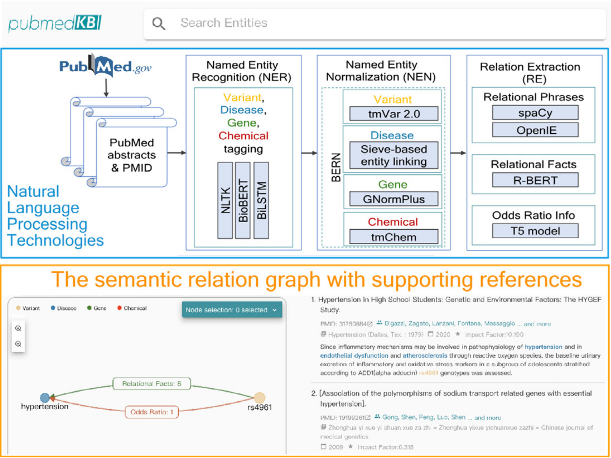
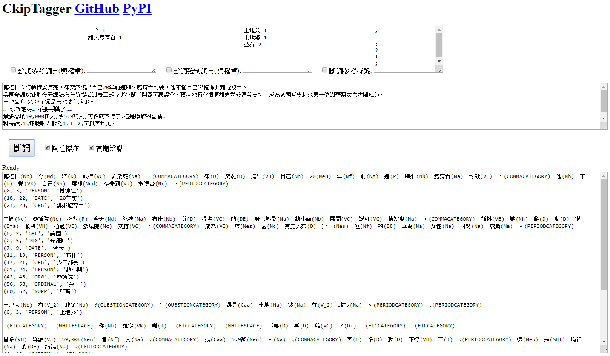
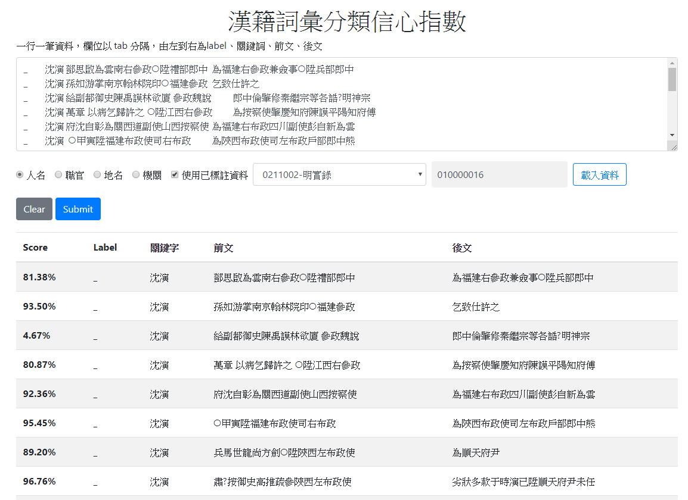
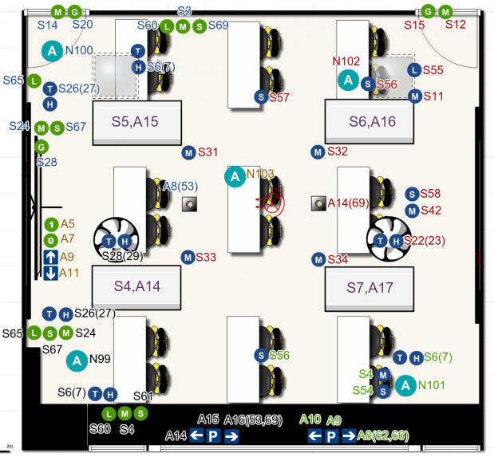

Project
-
pubmedKB: End-to-end Relation Extraction for Biomedical Literature.
Peng-Hsuan Li, Ting-Fu Chen, and Jia-Hsin Huang. 2022.
Taiwan AI Labs.

-
CkipTagger: WS-POS-NER.
Peng-Hsuan Li and Wei-Yun Ma. 2019.
Institute of Information Science, Academia Sinica.

-
CKIP Ancient Chinese Document NER.
Peng-Hsuan Li and Wei-Yun Ma. 2018.
Institute of Information Science, Academia Sinica.

-
Classroom Population Recognition without Lens.
Yao-Hua Yang, Peng-Hsuan Li, Shih-Han Wang, and Jane Yung-Jen Hsu. 2015.
Department of Computer Science & Information Engineering, National Taiwan University.
